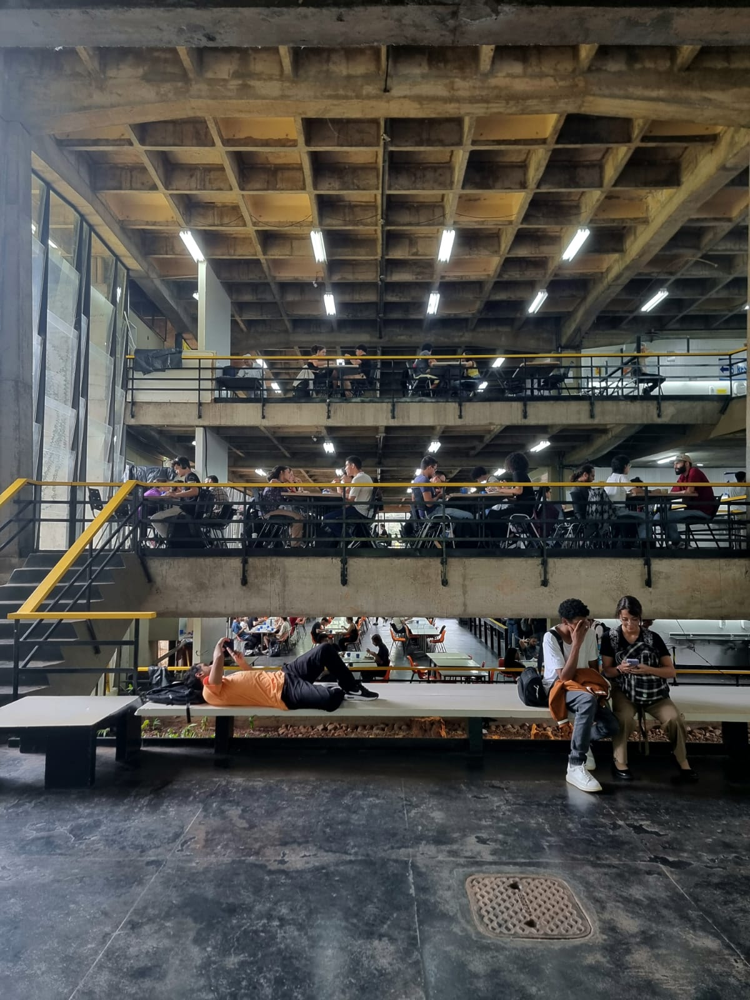

Locais Imperdíveis na UnB
Restaurante Universitário
Descrição breve sobre o Museu da UnB.
Jardim de Sequeiro

Descrição breve sobre a Biblioteca Central.
Reitoria

Descrição breve sobre a Praça dos Três Poderes.
Espaço PoP (BCE)

Descrição breve sobre o Museu de Arte Contemporânea.
Must-See Places at UnB
Space 1: University Museum

Brief description about the UnB Museum.
Space 2: Central Library
Brief description about the Central Library.
Space 3: Square of the Three Powers
Brief description about the Square of the Three Powers.
Space 4: Museum of Contemporary Art
Brief description about the Museum of Contemporary Art.
Endroits à visiter à l'UnB
Espace 1 : Musée de l'Université
Description brève sur le musée de l'UnB.
Espace 2 : Bibliothèque centrale
Description brève sur la bibliothèque centrale.
Espace 3 : Place des Trois Pouvoirs
Description brève sur la Place des Trois Pouvoirs.
Espace 4 : Musée d'Art Contemporain
Description brève sur le musée d'art contemporain.
Lugares para visitar en la UnB
Lugar 1: Museo de la Universidad
Descripción breve sobre el Museo de la UnB.
Lugar 2: Biblioteca Central
Descripción breve sobre la Biblioteca Central.
Lugar 3: Plaza de los Tres Poderes
Descripción breve sobre la Plaza de los Tres Poderes.
Lugar 4: Museo de Arte Contemporáneo
Descripción breve sobre el Museo de Arte Contemporáneo.